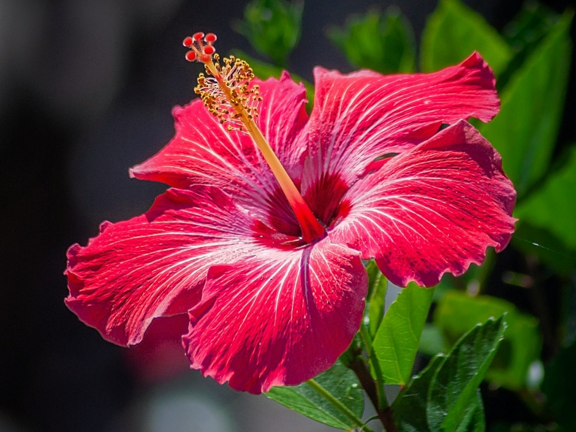

Hibiscus is a tropical flowering plant known for its large, colorful blooms. It is commonly grown in gardens and hedges and is also the national flower of Malaysia. Hibiscus plants are attractive, easy to maintain, and bloom frequently in warm climates.
Needs full sunlight (6–8 hours daily) for best flowering.
Water regularly to keep soil moist but not waterlogged.
Best growth at 24°C – 32°C. Prefers warm tropical climates.
Use fertile, well-draining soil rich in organic matter.
Flowers bloom frequently throughout the year in warm conditions.
Used for decoration, landscaping, hedges, and ornamental gardens
Cause: Overwatering or poor nutrients.
Solution: Adjust watering and apply fertilizer.
Cause: Stress from temperature or watering changes.
Solution: Maintain stable care conditions.
Cause: Fungal infection.
Solution: Remove affected leaves and improve airflow.
Cause: Insect infestation.
Solution: Use natural pest control methods.
Cause: Lack of sunlight or nutrients.
Solution: Provide full sunlight and fertilizer.